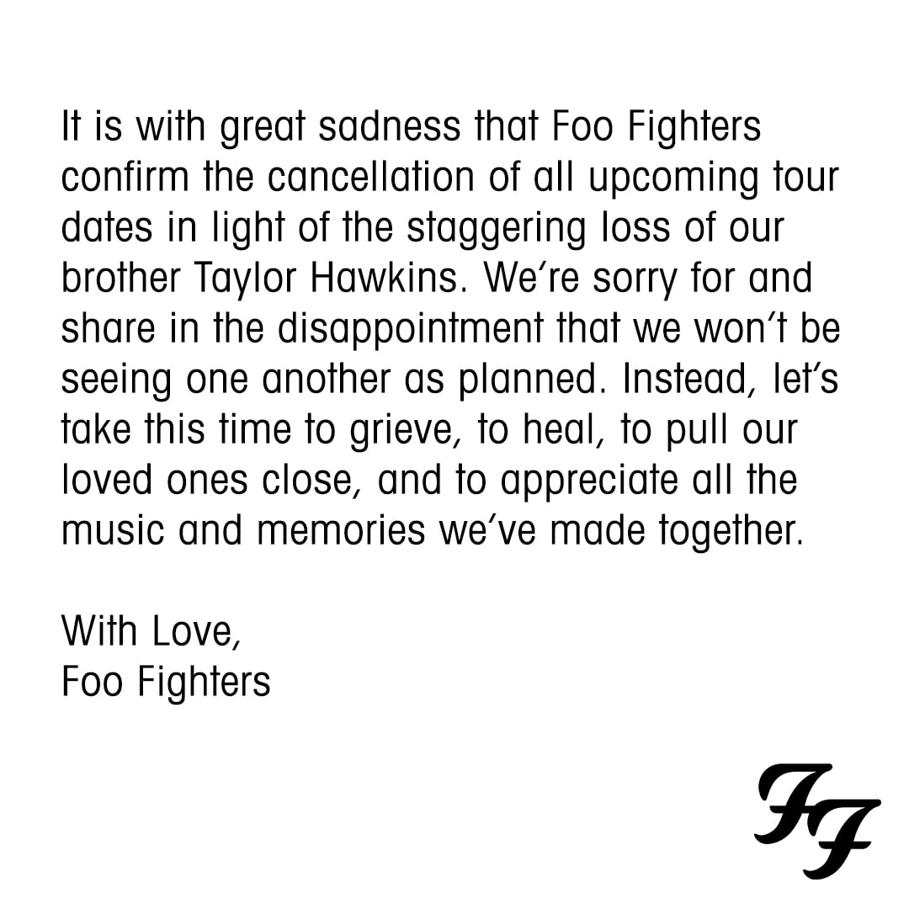

Foo Figthers Suspende La Gira 2022 Tras La Muerte de Taylor Hawkins
“Es con gran tristeza que Foo Fighters confirma la cancelación de todas las próximas fechas de la gira a la luz de la impactante pérdida de nuestro hermano Taylor Hawkins.
Lamentamos y compartimos la decepción de que no nos veremos como estaba planeado. En cambio, aprovechemos este tiempo para llorar, sanar, acercar a nuestros seres queridos y apreciar toda la música y los recuerdos que hemos creado juntos.
Con amor, Foo Fighters", dijo la banda en un comunicado a CNN.
Murió Taylor Hawkins
La noticia fue anunciada a través de un comunicado que publicaron en el perfil de Twitter oficial de la banda.
“La familia de Foo Fighters se encuentra devastada por la trágica e inesperada pérdida de nuestro amado Taylor Hawkins. Su espíritu musical y risa contagiosa vivirán con nosotros por siempre”
El artista fue encontrado sin vida en la habitación de hotel en Bogotá, Colombia. La banda tenía previsto cerrar el Festival Estereo Picnic
:quality(70)/cloudfront-eu-central-1.images.arcpublishing.com/prisaradio/YSPV7UARRS3CCSMCXGYGHJ2DQI.jpg)
Minutos antes de que la banda confirmara la muerte de Hawkins, los organizadores del Festival Estereo Picnic compartieron la información de que se suspendía la presentación de Foo Fighters.